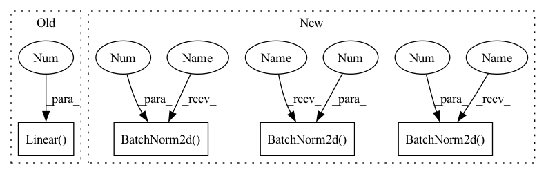

Pattern ID :13742

Before Change
self.conv4 = nn.Conv2d(16, 16, 3)
self.fc1 = nn.Linear(16 * 5 * 5, 120) // 5x5 image dimension
self.fc2 = nn.Linear(120, 84)
self.fc3 = nn.Linear(84, num_classes)
def forward(self, x):
Forward.
x = F.relu(self.conv1(x))
After Change
Initialize.
super(SimpleNet, self).__init__()
self.conv1 = nn.Conv2d(3, 6, 3)
self.bn1 = nn.BatchNorm2d(6)
self.conv2 = nn.Conv2d(6, 6, 3)
self.bn2 = nn.BatchNorm2d(6)
self.conv3 = nn.Conv2d(6, 16, 3)
self.bn3 = nn.BatchNorm2d(16)
self.conv4 = nn.Conv2d(16, 16, 3)
self.bn4 = nn.BatchNorm2d(16)
self.fc1 = nn.Linear(16 * 5 * 5, num_classes) // 5x5 image dimension
def forward(self, x):
Forward.
In pattern: SUPERPATTERN
Frequency: 3
Non-data size: 4
Instances
Fragment ID: 45972029
Project Name: j-marple-dev/model_compression
Commit Name: 1d9fb24957cb8fb083f2c4c69c9f2b80b7f92b6e
Time: 2020-06-15
Author: hoonyyhoon@snu.ac.kr
File Name: src/models/simplenet.py
M Class Name: SimpleNet
N Class Name: SimpleNet
M Method Name: __init__(2)
N Method Name: __init__(2)
M Parent Class: nn.Module
N Parent Class: nn.Module
M File Name: src/models/simplenet.py
N File Name: src/models/simplenet.py
M Start Line: 23
M End Line: 25
N Start Line: 20
N End Line: 27
'>
Before Change
super(VAE, self).__init__()
self.fc1 = nn.Linear(784, 400)
self.fc21 = nn.Linear(400, 20)
self.fc22 = nn.Linear(400, 20)
self.fc3 = nn.Linear(20, 400)
self.fc4 = nn.Linear(400, 784)
After Change
nn.BatchNorm2d(32),
nn.ReLU(inplace=True),
nn.Conv2d(32, 64, kernel_size=4, stride=2, padding=1, bias=False),
nn.BatchNorm2d(64),
nn.ReLU(inplace=True),
nn.Conv2d(64, 128, kernel_size=4, stride=2, padding=1, bias=False),
nn.BatchNorm2d(128),
nn.ReLU(inplace=True),
nn.Conv2d(128, 256, kernel_size=4, stride=2, padding=1, bias=False),
nn.BatchNorm2d(256),
nn.ReLU(inplace=True)
)
self.sigma = nn.Conv2d(256, 1024, kernel_size=4, bias=False)
self.mu = nn.Conv2d(256, 1024, kernel_size=4, bias=False)
self.decoder = nn.Sequential(
nn.ConvTranspose2d(1024, 256, kernel_size=4, bias=False),
nn.BatchNorm2d(256),
nn.ReLU(inplace=True),
nn.ConvTranspose2d(256, 128, kernel_size=4, stride=2, padding=1, bias=False),
nn.BatchNorm2d(128),
nn.ReLU(inplace=True),
nn.ConvTranspose2d(128, 64, kernel_size=4, stride=2, padding=1, bias=False),
nn.BatchNorm2d(64),
nn.ReLU(inplace=True),
nn.ConvTranspose2d(64, 32, kernel_size=4, stride=2, padding=1, bias=False),
nn.BatchNorm2d(32),
nn.ReLU(inplace=True),
nn.ConvTranspose2d(32, 3, kernel_size=4, stride=2, padding=1, bias=False)
)
'>
Fragment ID: 45972028
Project Name: deeperlearner/pytorch-template
Commit Name: 576d9f329d45ddf4af2b320655eb909c48d5cb34
Time: 2020-11-24
Author: b04202035@g.ntu.edu.tw
File Name: model/VAE.py
M Class Name: VAE
N Class Name: VAE
M Method Name: __init__(2)
N Method Name: __init__(1)
M Parent Class: nn.Module
N Parent Class: nn.Module
M File Name: model/VAE.py
N File Name: model/VAE.py
M Start Line: 7
M End Line: 14
N Start Line: 7
N End Line: 44
'>
Before Change
super(LinearModel, self).__init__()
self.resnet_rgb = resnet18(pretrained=False)
self.resnet_rgb.fc = nn.Sequential(
nn.Linear(512, 512), nn.BatchNorm1d(512), nn.ReLU(True))
self.layer_steering = nn.Sequential(
nn.Linear(512, 256), nn.BatchNorm1d(256), nn.ReLU(True),
nn.Linear(256, 128), nn.BatchNorm1d(128), nn.ReLU(True),
After Change
// similar to the self-driving car model from Nvidia in 2016: https://developer.nvidia.com/blog/deep-learning-self-driving-cars/
self.layer_cnn = nn.Sequential(
nn.Conv2d(in_channels= 3, out_channels= 32, kernel_size=3, stride=2, padding=1), //size: 224-->112
nn.BatchNorm2d(32),
nn.ReLU(inplace=True),
nn.Conv2d(in_channels= 32, out_channels= 64, kernel_size=3, stride=2, padding=1), /레-->56
nn.BatchNorm2d(64),
nn.ReLU(inplace=True),
nn.Conv2d(in_channels= 64, out_channels= 128, kernel_size=3, stride=2, padding=1), /ኔ-->28
nn.BatchNorm2d(128),
nn.ReLU(inplace=True),
nn.Conv2d(in_channels= 128, out_channels= 256, kernel_size=3, stride=2, padding=1), /ቸ-->14
nn.BatchNorm2d(256),
nn.ReLU(inplace=True),
nn.Conv2d(in_channels= 256, out_channels= 512, kernel_size=3, stride=2, padding=1), /ቪ-->7, final size: batch_size*512*7*7
nn.BatchNorm2d(512),
nn.ReLU(inplace=True)
)
self.avgpool = nn.AdaptiveAvgPool2d((1, 1)) // pooling, change the size to batch_size*512*1*1
'>
Fragment ID: 45972031
Project Name: caipeide/autorace
Commit Name: 06e4c00bb704ca792481a7c06c052bfe2898aab6
Time: 2020-12-01
Author: pcaiaa@connect.ust.hk
File Name: ai_drive_models.py
M Class Name: LinearModel
N Class Name: LinearModel
M Method Name: __init__(1)
N Method Name: __init__(1)
M Parent Class: nn.Module
N Parent Class: nn.Module
M File Name: ai_drive_models.py
N File Name: ai_drive_models.py
M Start Line: 108
M End Line: 110
N Start Line: 110
N End Line: 127